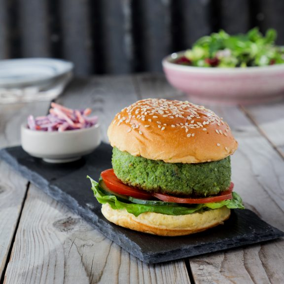
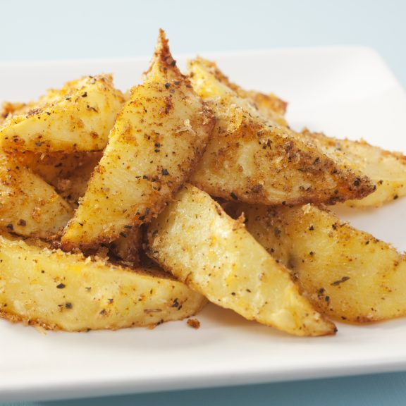
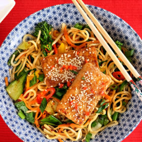

Quorn Cajun-Style Burger
Ingredients:
- 1 small onion, roughly chopped
- 150g baby spinach
- 300g Quorn pieces, defrosted
- 50g dried breadcrumbs
- 1 medium ripe mango, peeled and cut into small chunks
- 1 tbsp vegetable oil
- 1 egg, beaten
- 3 tbsp natural yogurt
- 200g red cabbage, finely shredded
- 4 seeded burger buns
- Salt and freshly ground black pepper, to taste
Instructions:
- Add the onion to a food processor bowl along with the spinach, Quorn pieces and the Cajun spice. Blend in the processor until the mixture is quite finely chopped. Season with salt and black pepper.
- Transfer the mixture to a bowl, add the beaten egg and breadcrumbs then gently mix until the ingredients come together. Dust a chopping board with flour and shape the burger mix into four round patties about the same size of the rolls.
- To assemble place each burger on the toasted burger bun bases with salad leaves, sliced cucumber and tomatoes then top with the bun lid. Serve with the red slaw on the side.

Spicy Potato Wedges
Ingredients:
- 2 tbsp vegetable oil
- 4 large potatoes, cut into wedges
- 1 tbsp fine breadcrumbs
- A pinch cayenne pepper
- A pinch cumin powder
- 1 tbsp vegetable oil
- ½ tsp paprika
- 3 tbsp natural yogurt
- ½ tsp pepper
- ½ tsp dried thyme
Instructions:
- Preheat the oven to 220°C/gas mark 7.
- Place the oil in a bowl and toss the potatoes in it.
- Mix the breadcrumbs, spices and thyme together, then sprinkle the mixture on to the potatoes.
- Toss the potatoes around again to ensure an even spicy coating.
- Place potato wedges on an oven tray and bake for 25 to 30 minutes, turning halfway through.

Winter Root and Bean Soup
Ingredients:
- 2 tsp olive oil
- 2 cloves garlic, crushed
- 1 small onion, finely diced
- 1 medium swede, peeled and chopped into chunks
- 3 large carrots, peeled and chopped into chunks
- 1 medium parsnip, peeled and chopped into chunks
- 4 sprigs thyme, stalks removed
- 850ml low-sodium vegetable stock
- 550ml semi-skimmed milk
- 2 x 400g can mixed beans
- Pinch of ground black pepper
- 1 medium wholemeal or granary French baguette
Instructions:
- Heat the oil in a large saucepan then add the garlic and onion, frying over a medium heat for 5 minutes or until soft but not coloured.
- Add the prepared swede, carrot, parsnip and sprigs of thyme, then stir to combine.
- Add the stock and milk, bring to the boil then simmer for 15 to 20 minutes until the vegetables are tender.
- While the vegetables are cooking, drain the canned mixed beans into a colander and rinse.
- Serve in bowls and enjoy

Crispy Sesame Tofu with Chinese Noodles
Ingredients:
- 400g of Tofu
- 400g mixed vegetables (e.g. Tenderstem broccoli, peppers, mangetout, bok choy, beansprouts)
- 3 spring onions
- 2 tbsp sesame oil
- 400g cooked ramen noodles, ready to use
- 150g spiralised carrots
- 4 sprigs thyme, stalks removed
- Black pepper
- 1 tbsp agave nectar (or brown sugar)
- 1 tsp miso paste
Instructions:
- Wrap the tofu in a clean kitchen towel. Place a chopping board on top and weigh it down with some cans or heavy cookbooks. This removes water and makes the tofu extra crispy. Let it sit for 30 minutes while you chop the vegetables and mix the sauce.
- Heat a tablespoon of sesame oil in a wok and fry the vegetables. Start with vegetables like broccoli, carrots and peppers. After 3-4 minutes add spring onions, chilli, mangetout, beansprouts and Bok Choy.
- Serve in bowls and enjoy

Loaded Mexican Tortilla Pan
Ingredients:
- 25g of vegetarian Cheddar cheese
- 4 tbsp double cream
- Pinch of salt and pepper
- 3 tbsp soured cream
- 1 ripe avocado, de-stoned, scooped out and sliced
- 2 flour tortillas
- 100g of mixed vegetarian Cheddar cheese and vegetarian Red Leicester cheese, grated
- 1 x 400g tin of of kidney beans or mixed beans, drained and rinsed
- 1 tsp honey
Instructions:
- In a large frying pan, heat up the oil over a medium heat and add in the onion and carrot. Cook for 5 minutes until the onions start to soften.
- In a bowl, mix the 25g cheese, double cream, salt, pepper and soured cream. This is your cheese sauce – it will be a thick, spreadable consistency.
- Sprinkle on the 100g mixed cheese and place the pan on a medium-to-high heat for a minute until the sauce starts to bubble.
- Serve from the pan, topped with avocado, red onion, the sliced chilli and fresh coriander.

Cajun Quorn with Coriander Rice and Mango Salsa
Ingredients:
- 350g vegan Quorn chicken style pieces
- 1⁄2 tbsp smoked paprika
- 1 tbsp ground cumin
- 1 tsp crushed dried chilli
- 1 medium ripe mango, peeled and cut into small chunks
- 100g brown rice
- 10g coriander, finely chopped
- 1 tbsp lime juice
- Pinch of salt
Instructions:
- Preheat the oven to 180°C/gas mark 4.
- In a bowl, mix the 25g cheese, double cream, salt, pepper and soured cream. This is your cheese sauce – it will be a thick, spreadable consistency.
- Bring a medium-sized saucepan of water to the boil and add the brown rice. Lower the heat, cover, and cook for about 20 minutes until the rice is tender. Drain and set aside.
- Serve the Quorn with the rice and salsa.